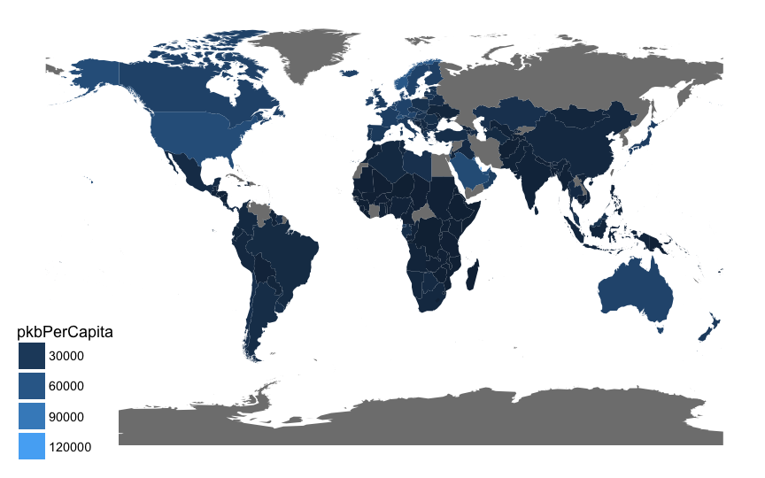
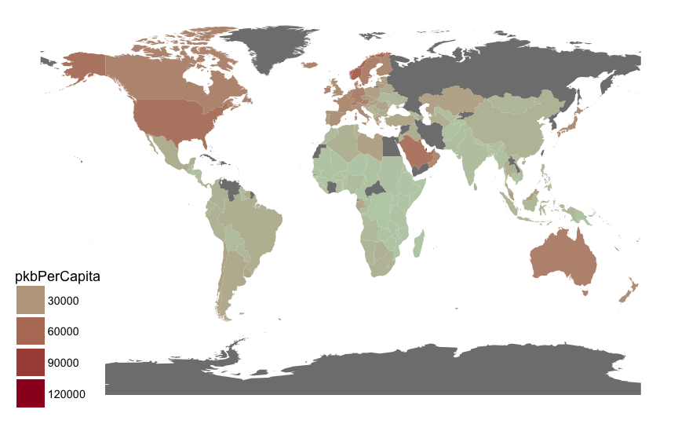
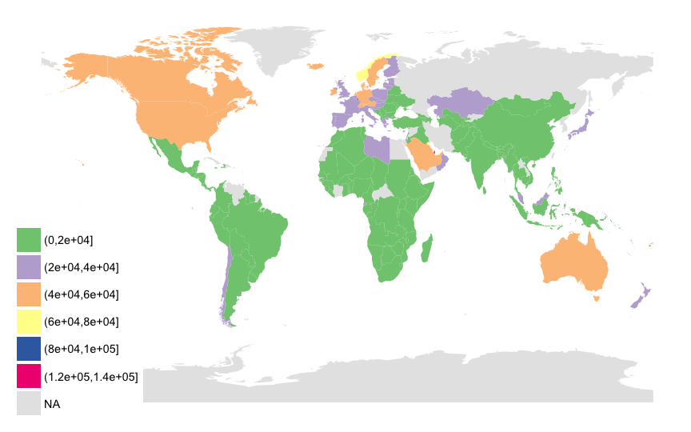
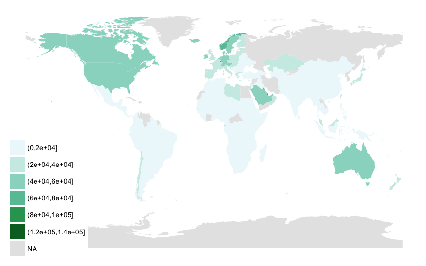
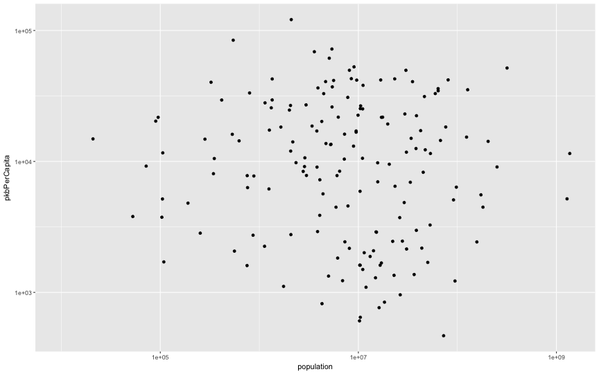
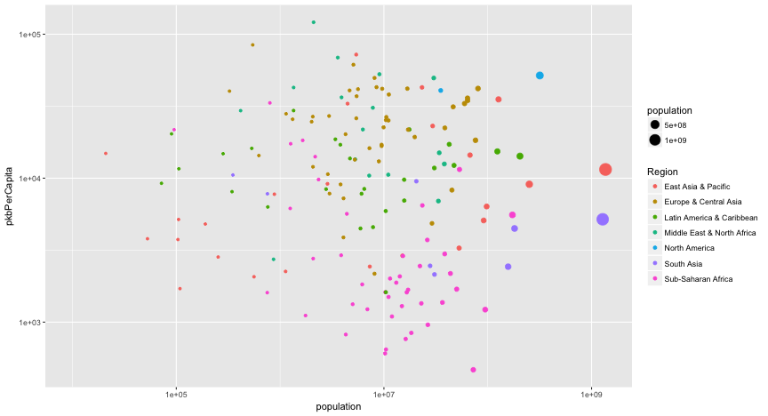
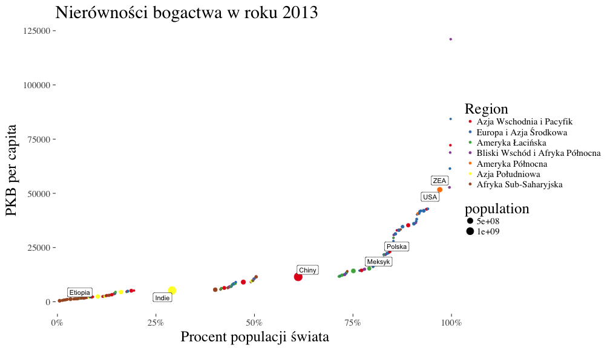

Dobry, zły i brzydki
o wizualizacji danych w języku R
Piotr Sobczyk
szychtawdanych.pl
Motywacja

Po co wizualizacja?
- Użyteczność: podejmowanie decyzji w oparciu o dane
- Maksymalizacja wpływu: obraz jako medium wyników analizy
- Estetyka

Tak więc estetyka może być pomocna w życiu
nie należy zaniedbywać nauki o pięknie
Jak zabieramy się za wizualizację?
- Chcemy opowiedziec pewną historię, wizualizacja jest środkiem wyrazu
- Notka PAP czy pobłębiona analiza?
- Książka kucharska czy ,,Czarodziejska Góra"?
- Strona techniczna
Dobra wizualizacja

Dobra wizualizacja
- Jasny, zapadający w pamięć przekaz
- Dopasowana do odbiorców (czytelnicy gazet, współpracownicy, kierownicy)
- Dopasowana do sytuacji w jakiej będą odbierane
- Wywieraja wpływ, przekazuje wiedzę, poszerza świadomość
Zła wizualizacja

Zła wizualizacja
- Celowo wprowadza w błąd odbiorcę
- Przesycona zbędnymi informacjami
- Niedokładna
Zła wizualizacja

Brzydka wizualizacja

Brzydka wizualizacja
- Trudna w interpretacji
- Niecelowo wprowadzająca w błąd
- Zawiera zbędne i nudne informacje
Case study
- Dane dotyczące PKB na mieszkańca i ludności na świecie
- Chcemy pokazać nierówności społeczne
- Dane pochodzą z serwisu gapminder https://www.gapminder.org
Kolory
- Wyróżnienie informacji, umożliwienie rozpoznania grup
- Dobór palety barw odpowiedniej do danych
- Symulator schorzeń wzroku, np. http://www.color-blindness.com/coblis-color-blindness-simulator/
Wybór palety barw

Wybór palety barw
- Skala ilościowa (uporządkowana)
- Skala uporządkowana rozbieżna (z elementem neutralnym)
- Skala jakościowa (nieuporządkowana)
Wybór palety barw

Wybór palety barw

Wybór palety barw

Wybór palety barw

Wybór palety barw

Sposób przedstawienia danych
- Te same dane można przedstawić na wiele sposobów
- Jaki cel chcemy osiągnąć?
Sposób przedstawienia danych

Sposób przedstawienia danych - odpowiednia skala

Sposób przedstawienia danych - kształt, kolor, rozmiar punktów

Sposób przedstawienia danych - kształt, kolor, rozmiar punktów
Inaczej


Źródła
- Przemysław Biecek, ,,Odkrywać, Ujawniać, Objaśniać! Zbiór esejów o sztuce prezentowania danych", 2014
- Edward Tufte, ,,Beautiful evidence"
- Gapminder, https://www.gapminder.org
- Symulator schorzeń wzroku http://www.color-blindness.com/coblis-color-blindness-simulator/
- https://www.r-bloggers.com/data-visualization-part-1/
- https://lisacharlotterost.github.io/2016/04/22/Colors-for-DataVis/
- Szychta w danych, www.szychtawdanych.pl
- pakiety: ggplot2, highcharter